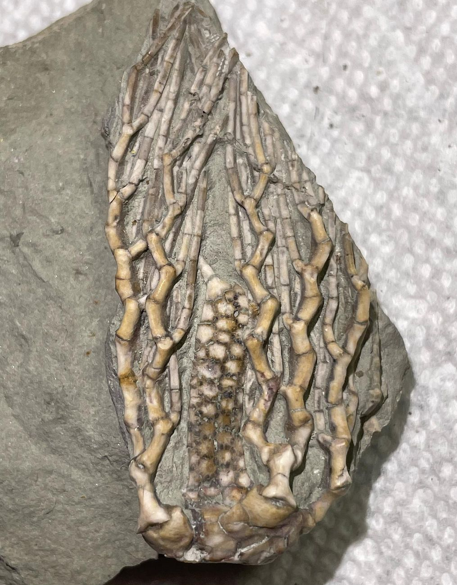

Clathrocrinus clinatus
Pennsylvanian
LaSalle Limestone, Bond Formation
Pontiac, Illinois, USA
Size: 5.5 cm crown
This species is similar to C. clathratus, except that the brachials articulate at broader angles, and so the arms form a milder zig-zag pattern. This is reminiscent of an older, Mississippian-aged cladid crinoid known as Lanecrinus, whose arms form subtle zig-zags but with shorter brachials. Also note the prominent spine-tipped anal tube that is visible on this particular specimen.
|

|